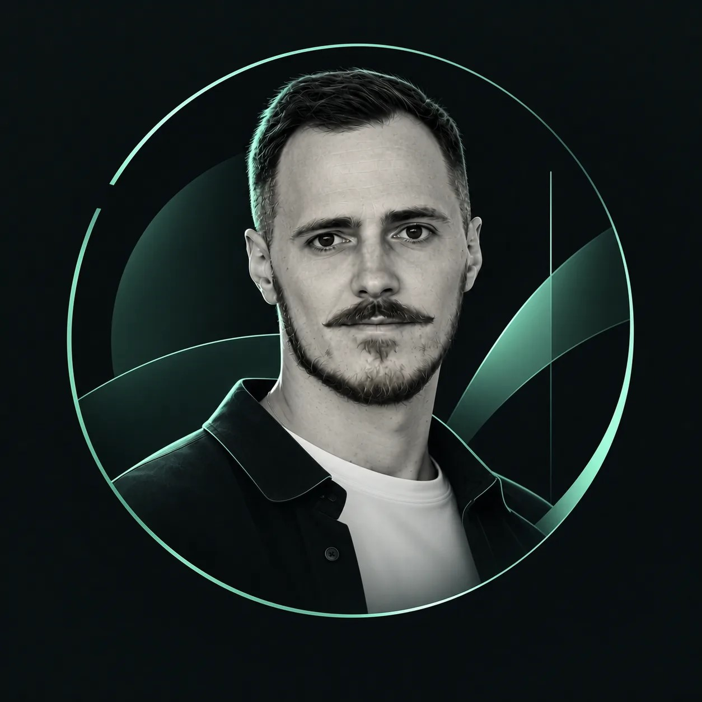

Ручной работы на диспетчера в день
Автоматическое формирование наряда заменило ежедневную ручную операцию. Решением пользуются 70 сотрудников. Расчётный потенциал высвобождения времени — до 105 человеко-часов в день (70 × 90 мин ÷ 60).

MAXIM KURYLEVPRODUCT & SYSTEMSМаксим Курылёв
Lead Business Analyst / Product Owner / AI Product Builder
Исследую бизнес-процессы и потребности пользователей, проектирую цифровые решения и сопровождаю их реализацию до приёмки. Применяю AI-инструменты для анализа требований, прототипирования и создания работающих MVP.
Москва · удалённо / гибрид
лет в логистике и цифровых продуктах
РЦ с внедрёнными экспедиторскими документами
водителей — масштаб продукта Last Mile
Работаю на пересечении бизнеса, пользователей и технологий. Исследую процессы, выявляю проблемы и перевожу их в требования к цифровым продуктам — от корпоративных транспортных систем до CRM для международной логистики.
Моя сильная сторона — связывать задачи бизнеса с пользовательскими сценариями, требованиями и критериями приёмки. Сопровождаю решения от обследования процессов до тестирования и внедрения. Использую AI для анализа, прототипирования и разработки MVP.
Процессы / потребности / AS-IS / GAP / TO-BE
Требования / пользовательские сценарии / MVP
Бэклог / приоритеты / разработка с AI-инструментами
Критерии приёмки / UAT / обратная связь
Проекты, моя роль и конкретный вклад в результат.
Внедрённые решения: масштаб и оценка эффекта.
Автоматическое формирование наряда заменило ежедневную ручную операцию. Решением пользуются 70 сотрудников. Расчётный потенциал высвобождения времени — до 105 человеко-часов в день (70 × 90 мин ÷ 60).
По оценке пользователей, время обработки сократилось примерно на 67%. Вместо разрозненных папок — единый кабинет с документами, статусами и историей рассмотрения.
Введено в эксплуатацию автоматическое формирование поручения экспедитору и экспедиторской расписки. Мой вклад — определение источников 30+ реквизитов, маппинг данных и UAT.
AS-IS / TO-BE · GAP-анализ · Customer Journey Mapping · User Story Mapping
MVP · Бэклог · Roadmap · Приоритизация · User Stories · Use Cases · Критерии приёмки · UAT · DoR / DoD
TMS · WMS · ERP · OMS · YMS · SAP ERP · SQL · API-интеграции
Codex · Анализ требований и прототипирование с AI · Jira · Confluence · Miro · MS Visio · VS Code · Docker · PostgreSQL
CRM на этапе пилота, новостной AI-агент и личные прототипы.
Внутренняя CRM для международной логистики: партнёры, клиентские запросы, сделки, задачи, документы и командные коммуникации. MVP развёрнут на сервере и проходит пилотное тестирование с пользователями. Моя роль — исследование потребностей, проектирование процессов и требований, управление бэклогом, проверка изменений и организация серверного развёртывания. Дальнейшее развитие — по обратной связи участников пилота. Публичное демо представлено отдельно от рабочей системы.
Создал AI-агента для мониторинга новостей по логистике и ВЭД: сбор материалов с сайтов и публичных Telegram-источников, фильтрация, ранжирование и удаление дублей. Агент готовит редакционные черновики; после согласования в Telegram подтверждённые материалы публикуются на тестовом сайте.
Личные MVP, созданные с помощью Codex для проработки логистических процессов, пользовательских сценариев и интерфейсов. Демонстрируют подход к анализу и проектированию продуктов.
Открыт к предложениям на позиции Lead Business Analyst и Product Owner, а также к проектам с применением AI в разработке цифровых продуктов. Удалённая работа / гибрид · Готов к командировкам